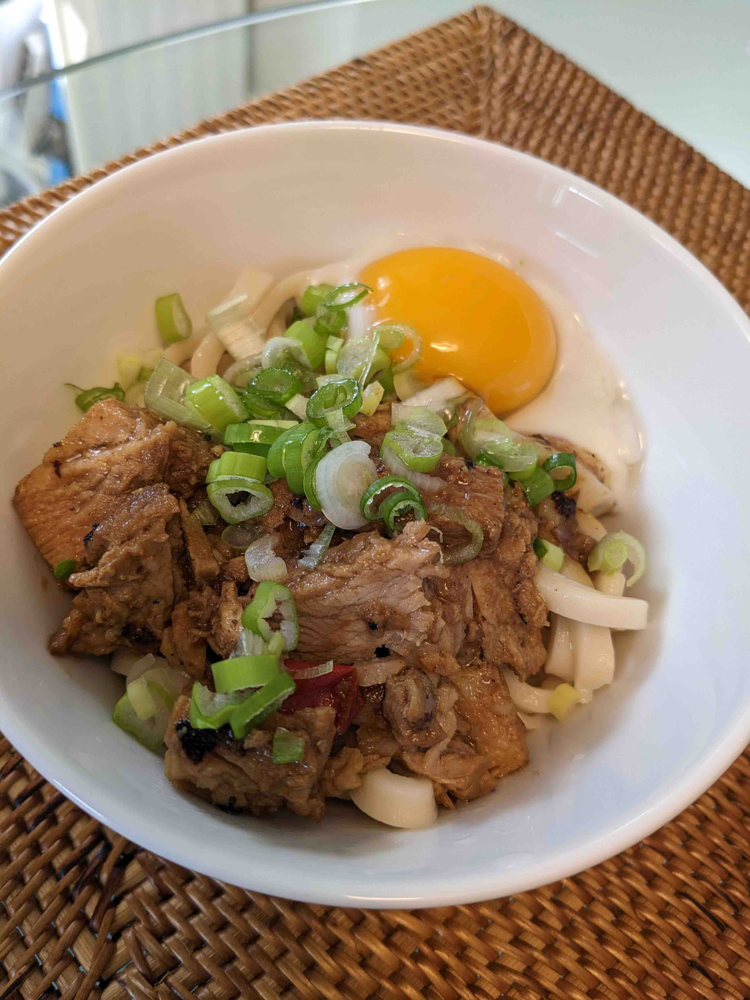

Table of Contents
HTML_HEAD: <link rel="stylesheet" type="text/css" href="org.css" />
1 はじめに
週末の昼はパスタとうどん、たまにリゾット等をローテーションしているのですが、ボストン近郊のスーパーマーケットやAmazonで入手できるうどんは高くてまずいです。日本から輸入している乾麺の讃岐うどんで6束入り$7くらいします。冷凍讃岐うどんの方が美味しいですが、こちらは更に高価です。そこで、讃岐うどんを小麦から作ってみることにしました。
2 レシピ
材料はこれだけ。
- all purpose flour(中力粉) - 300g
- 塩 10g
- ぬるま湯 135g
強いコシが好きなので、最初はbread flour(強力粉)を混ぜていたのですが、固くて生地を伸ばすのが大変なので、all purpose flourのみになりなした。ぬるま湯は風呂よりもぬるいくらい。
3 作り方
3.1 生地を作る
- ぬるま湯に塩を入れ、しっかりと溶かしておく
- ホームベーカリーの容器に小麦粉を入れる
- そこへ塩入のぬるま湯を入れる
- うどんコースでホームベーカリーで生地を作る(15分混ぜるだけ?)
3.2 生地を休ませる
- 生地ができたら、大きめのジップロックに入れ、2時間放置する
3.3 麺を作る
- ジップロックの袋の大きさによりますが、包丁で2〜3等分にする
- 一つをジップロックに入れ、20回以上踏む
- 4つに折りたたむ
- ステップ2,3を3セット行う。最後はなるべく薄くなるようにする
- 麺棒を使って厚さ3mmになるまで伸ばす(これが一番大変)
- 包丁で3mmの厚さに切っていく。切りやすいように折りたたむとよい
片栗粉を打ち粉として使ってベタつかないようにすると良いと思います。
3.4 茹でる
- 多めの湯を沸騰させ、7〜10分茹でる
- 流水でシメる
4 食べる

今回は夕食の残りを使った肉うどんにしました。生卵は念の為熱湯で殺菌しています。 麺のできは冷凍讃岐うどんには少し及ばず、乾麺讃岐うどん以上、といったところでした。
300グラムの小麦から3人前が出来ます。たくさん食べる人は足りないかも。
5 終わりに
材料は小麦と塩だけなので、うどんを手作りするととてもお得です。冷凍讃岐うどんには敵いませんが、こちらは更に高価な上、貴重な冷凍庫の場所を取るので常備できません。
朝食にパンを焼き、その後うどんの生地を作って寝かせてある間にアパートの掃除をすると、休日の午前中が有効に使えます。今週末の土曜日はそれらに加えて午後に牛タンを捌いたので、とても充実した一日になりました。